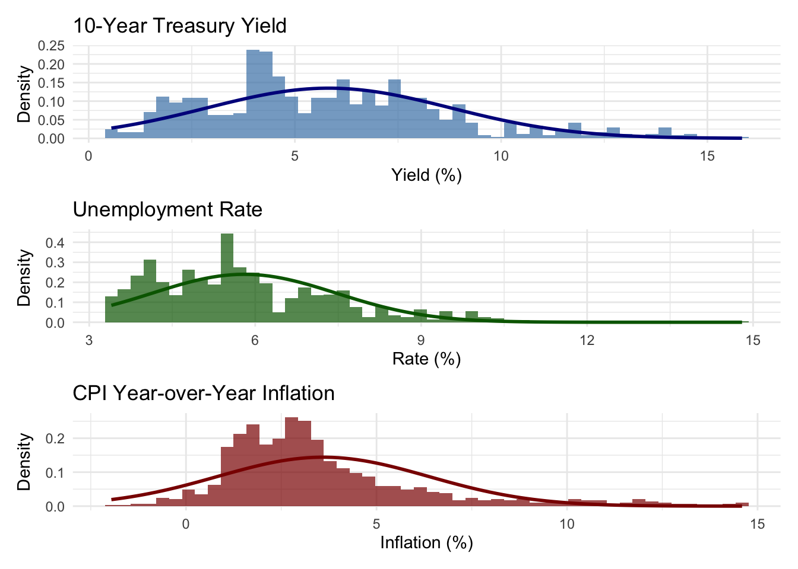
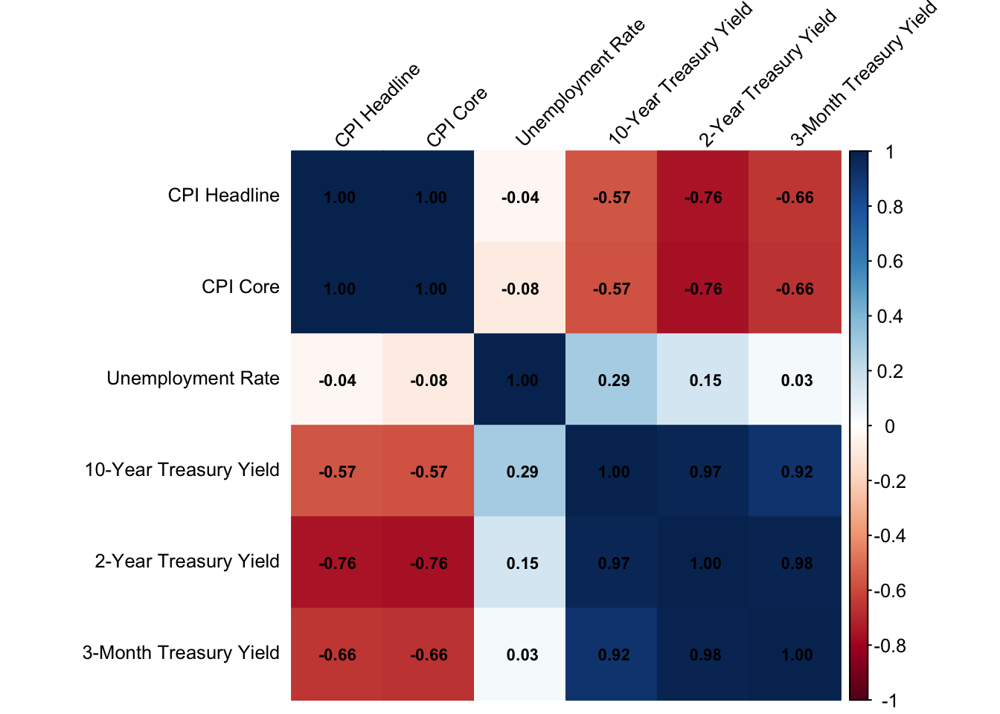

The dataset for this project was collected from the Federal Reserve Economic Data (FRED) database, which provides comprehensive macroeconomic and financial time series data. The data collection process involved downloading multiple time series covering:
2.1.1 Data Sources
Treasury Yield Curve Data: Constant maturity rates for various maturities (3-month, 1-year, 2-year, 5-year, 7-year, 10-year, 20-year, 30-year)
Recession Indicators: NBER-defined recession periods (USREC, USRECM)
Inflation Measures:
Consumer Price Index (CPI): Headline, Core, Energy, Food & Beverages
Personal Consumption Expenditures (PCE): Headline and Core
Producer Price Index (PPI): Final Demand, Energy, Commodities
Unemployment Data:
Aggregate unemployment rate
By gender (Men, Women)
By race/ethnicity (White, Black, Hispanic)
By age groups (16-19, 20-24, 25-54, 55+)
Inflation Expectations:
Market-based (TIPS breakeven rates)
Survey-based (University of Michigan)
Commodity Prices: WTI Crude Oil
Labor Costs: Employment Cost Index
2.1.2 Collection Method
Data was downloaded programmatically using Python scripts that accessed FRED’s public CSV download endpoints. The collection script (data_collection_cleaning.ipynb) downloaded 42 different time series, with some series unavailable or discontinued (noted in the collection logs).
2.2 Data Cleaning and Processing
2.2.1 Initial Data Structure
The raw data files were stored as individual CSV files in the data/raw/ directory, with each file containing a single time series from FRED. The files were then merged into a unified master dataset.
2.2.2 Cleaning Steps
Date Alignment: All series were merged on the date column, creating a monthly frequency dataset
Time Period Selection: Data was filtered to start from January 1954, when most macroeconomic series become available
Missing Value Handling:
Series with more than 95% missing values were excluded
Treasury yield series (DGS*) were forward-filled (carried forward) to handle temporary gaps
Macroeconomic series were forward-filled to maintain continuity
Recession indicator (USREC) was filled with 0 for non-recession periods
Final Dataset: After cleaning, the master dataset contains 863 monthly observations and 35 variables
Inference: Most variables have complete or near-complete data, which is great for analysis. The ones with higher missing percentages like TIPS breakeven rates (T10YIE, T5YIE, T5YIFR) and the Employment Cost Index are newer series that simply weren’t collected in earlier decades. This makes sense historically; TIPS didn’t exist until the late 1990s, and the ECI started in the 1980s. The oil price data (DCOILWTICO) also has gaps, likely due to market disruptions or data collection issues. For our analysis, we’ll focus on variables with good coverage, and when we need the newer series, we’ll work with the available time periods.
Code
# Display missing value tablemissing_stats |>select(variable_clean, missing_count, missing_pct) |>filter(missing_pct >0) |>arrange(desc(missing_pct)) |>head(15) |> knitr::kable(col.names =c("Variable", "Missing Count", "Missing %"),digits =1,caption ="Top 15 Variables by Missing Data Percentage" )
Top 15 Variables by Missing Data Percentage
Variable
Missing Count
Missing %
10Y Breakeven
588
68.1
5Y Forward
588
68.1
5Y Breakeven
588
68.1
Employment Cost Index
564
65.4
WTI Oil
384
44.5
3-Month Treasury
332
38.5
Michigan Survey
288
33.4
30-Year Treasury
277
32.1
2-Year Treasury
269
31.2
Unemp: Hispanic
230
26.7
Unemp: Black
216
25.0
7-Year Treasury
186
21.6
CPI Food
156
18.1
10-Year Treasury
96
11.1
1-Year Treasury
96
11.1
2.3 Dataset Overview
2.3.1 Variable Categories
The master dataset contains the following categories of variables:
Inference: This Cleveland dot plot shows when each variable starts having data. Most of our core series (unemployment, CPI, and Treasury yields) begin around 1954. Newer series like TIPS break-even rates and the Employment Cost Index start much later, which explains their higher missing percentages.
Warning: Removed 96 rows containing non-finite outside the scale range
(`stat_bin()`).

Inference: These histograms give us a quick sense of what “normal” looks like for our key variables. The 10-year Treasury yield is pretty spread out, ranging from near zero (recent years) to over 15% (early 1980s), with most values clustering around 4-6%. Unemployment shows a right-skewed distribution most of the time it’s below 6%, but we do see those painful spikes during recessions. The inflation distribution is interesting too; it’s centered around 2-3% but has a long tail on the right from those high-inflation periods in the 1970s and early 1980s. This tells us our dataset captures both normal times and extreme events, which is exactly what we need.
2.3.4 Correlation Matrix of Key Variables
Code
# Calculate correlations for key variablescor_vars <-c("dgs10", "dgs2", "dgs3mo", "unrate", "cpiaucsl", "cpilfesl")cor_data <- master |>select(all_of(cor_vars)) |>cor(use ="pairwise.complete.obs")# Create full names for labelsfull_names <-c("dgs10"="10-Year Treasury Yield","dgs2"="2-Year Treasury Yield","dgs3mo"="3-Month Treasury Yield","unrate"="Unemployment Rate","cpiaucsl"="CPI Headline","cpilfesl"="CPI Core")# Rename rows and columnsrownames(cor_data) <- full_names[rownames(cor_data)]colnames(cor_data) <- full_names[colnames(cor_data)]# Create correlation plot with same orientation on both axescorrplot( cor_data,method ="color",type ="full",order ="hclust",tl.cex =0.8,tl.col ="black",tl.srt =45, # Rotate labels 45 degreesaddCoef.col ="black",number.cex =0.7,diag =TRUE)

Inference: The correlation matrix reveals some expected relationships. Treasury yields at different maturities are highly correlated (0.8-0.9), which makes sense as they’re all responding to similar economic forces. CPI headline and core are very closely related (0.99), as expected. Interestingly, yields and inflation show moderate positive correlation, which reinforces the idea that higher inflation expectations push bond yields up. What’s also interesting is that we don’t see strong negative correlations here unemployment doesn’t correlate strongly with yields or inflation in this simple view, but that’s probably because the relationship is more complex and time-varying. The Phillips curve relationship (negative correlation between unemployment and inflation) might be masked by the long time period or might only appear during specific economic regimes. The clustering in the plot groups similar variables together, which helps us understand the structure of our data.
2.4 Data Processing Notes
2.4.1 Forward-Filling Strategy
The cleaning process used forward-filling (carry-forward) for missing values, which is appropriate for time series data where: - Treasury yields are relatively stable month-to-month - Macroeconomic indicators change gradually - Missing values often represent temporary data collection gaps rather than true missing observations
2.4.2 Limitations
Early Period Coverage: Some series (e.g., TIPS breakeven rates, some demographic unemployment data) have limited historical coverage
Frequency: All data is monthly, which may miss higher-frequency dynamics
Missing Data: Some variables (e.g., Employment Cost Index) have significant gaps, limiting their use in time series analysis
Data Availability: Some originally planned series (e.g., GSCPI, certain CPI/PCE components) were unavailable from FRED
2.4.3 Final Dataset
The cleaned master dataset (master_df.csv) is saved in the data/clean/ directory and serves as the primary data source for all analyses in this project.